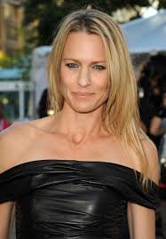
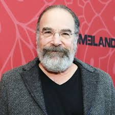
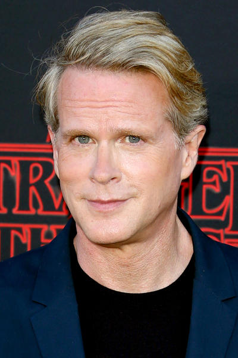
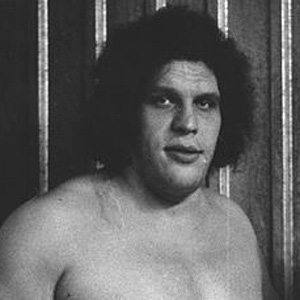

CAST & CHARACTERS
- Fred Savage as The Grandson
- Peter Falk as Grandpa/The Narrator
- Betsy Brantley as The Mother
- Cary Elwes as Westley/Dread Pirate Roberts/The Man in Black
- Mandy Patinkin as Inigo Montoya
- Chris Sarandon as Prince Humperdinck
- Christopher Guest as Count Tyrone Rugen
- Wallace Shawn as Vizzini
- André the Giant as Fezzik
- Robin Wright as Buttercup/The Princess Bride
- Peter Cook as The Impressive Clergyman
- Mel Smith as The Albino
- Carol Kane as Valerie, Max's wife
- Billy Crystal as Miracle Max
- Margery Mason as The Ancient Booer
- Malcolm Storry as Yellin
- Willoughby Gray as The King



